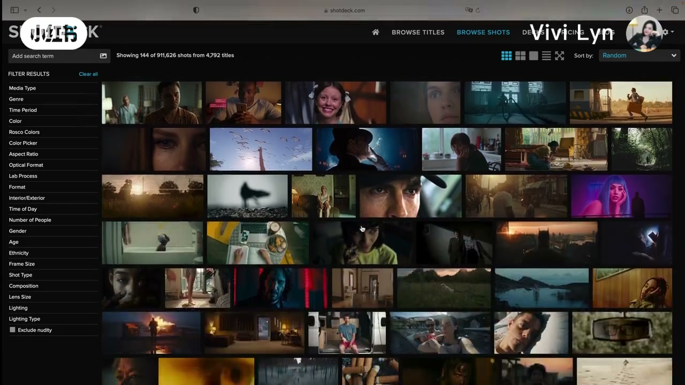
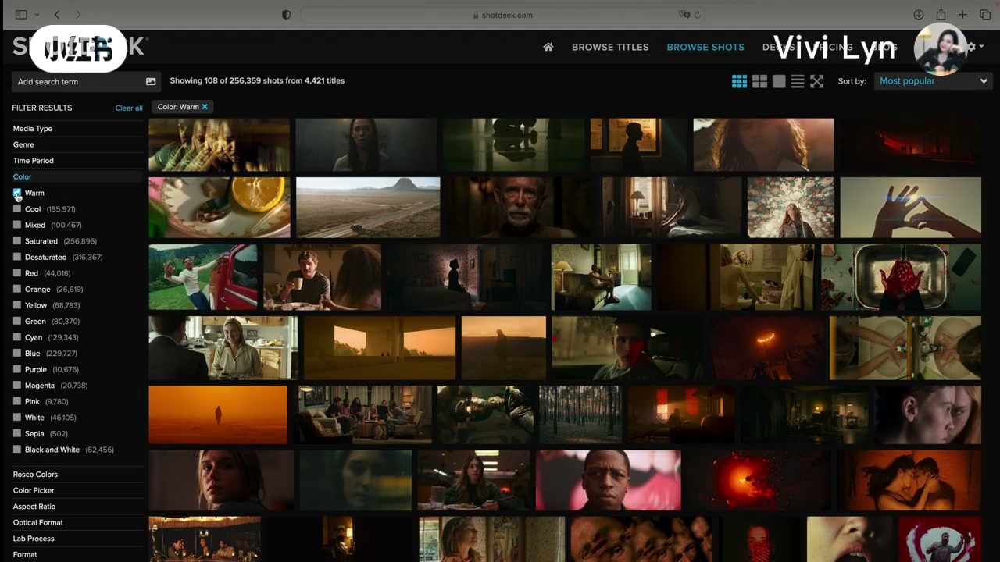
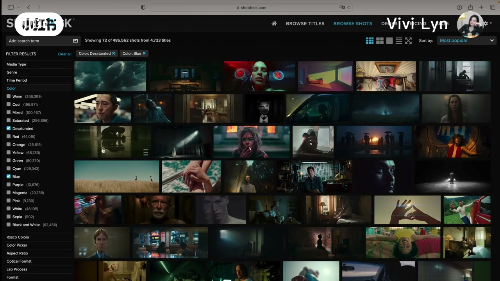
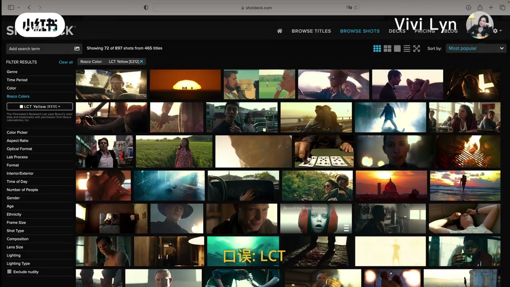
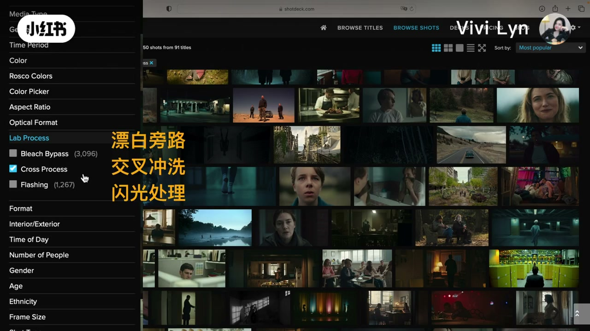
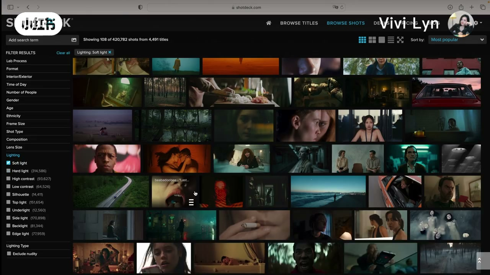
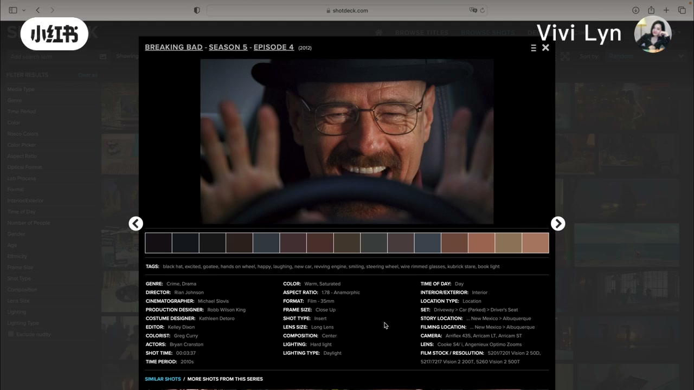
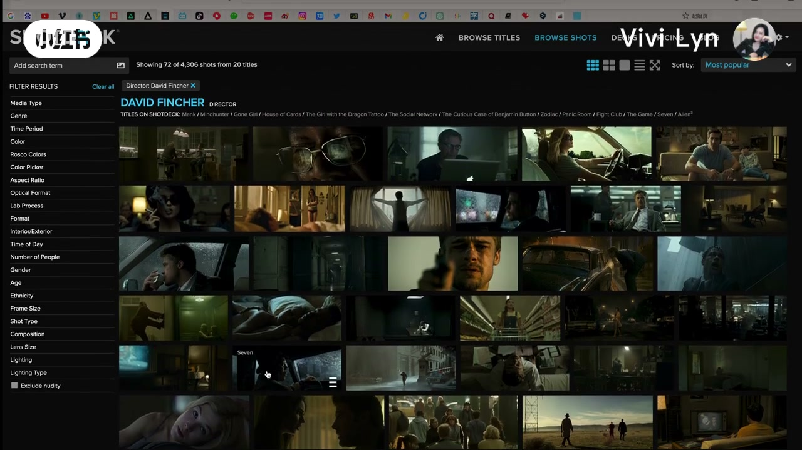

内容要点
这是一段对着 ShotDeck 页面讲解的屏幕录制，右上角一直有她的小窗。笔记正文也写了：同类型网站她基本都看过，仍觉得 ShotDeck 最好用，影片信息更全；调色没思路要多看、多积累，结合实操更重要。下面按她的使用顺序收成八截，不把 165 段口播逐条铺开。
知识结构
她说私下上课常被问到调色没思路。本期要分享的是灵感来源，以及她怎么把这个网站用在调色学习上。口播把创办人听成含糊的英文名，画面没有打出姓名，这里不把名字写成已核实事实。
没有特殊任务时，她直接进 Browse Shots 随机浏览。要调微电影这类具体项目时，再用系统给的筛选。只为抬审美，随意看也有帮助。
她最想让人重点看的一栏是 Color，按场景主色分类。演示先勾 Warm，看不同场景的暖调方案，再勾 Desaturated，并同时加上蓝色，让两个条件一起生效。
她把 Rosco 说成加州一家照明和特效公司，滤色片在电影、电视、舞台里用得很广。这一栏比 Color 更细分、更特殊。口播说成 LTC，画面选中的是 LCT Yellow，并打了「口误：LCT」。Color Picker 她让观众自己选，没有展开。
对胶片感兴趣可以看这一栏。她点名 Bleach Bypass、Cross Process、Flashing。画面把中文写成漂白旁路、交叉冲洗、闪光处理，并勾着 Cross Process。她说这一栏不多讲。
她说想把调色做好，必须对光线有了解：后期要做光影重塑时，参考专业画面怎么处理高光和阴影。画面先停在 Soft light，随后勾 Silhouette。Lighting Type 里她扫过日光、晴天、阴天和人工光，并点开 Artificial light，提到 Practical light 和荧光。她说自己只是过一遍。
浏览时若发现是胶片拍的，例如她举的《绝命毒师》35mm，她会再看 Film Stock，也会看相机和镜头。她认为学习还没到那一步时，按前面的颜色和光线思路多看多练就够。进步会很快，是她的判断，片子里没有前后作业对照。
她说网站没有 Commercial、没有 TVC，估计和版权有关。搜索栏可以打关键词。口播听成一个含糊片名，画面打开的是 David Fincher 的导演页和片单。之后是关注、一键三连和预告，没有新操作。
她给的用法是分层的：没任务就在 Browse Shots 里随机看；有题目就从 Color 叠条件，需要特殊色再进 Rosco 或自己点 Color Picker；胶片工艺看 Lab Process；真正想把调色做自然，优先看 Lighting 和 Lighting Type。胶卷、镜头是加看项。广告片不在库里。搜索用来锁定一部想模仿的作品，片中演示的是 David Fincher。
图文实录
开场：学生问没思路，她打开 ShotDeck
视频没有交代这节课的具体班级或作业，只说私下上课时经常被问到调色没思路怎么办。她自报 Vivi，说明这期要分享平时找调色灵感、也用来抬审美的一个网站。笔记里她还写过，同类网站基本都看过，仍是 ShotDeck 信息更全。口播把站名听成 Shopdeck，画面左上角的字是 SHOTDECK。首页中部一句标语是业界研究工具，搜索框提示可以按影片、演员、光线、摄影指导、地点来搜。她说网站主要从优秀片子里收录截图。口播里的「竞争截图」按语境理解成精彩截图。
「这个视频的话就和大家分享一个我平时调色灵感的重要来源。」
创办人一段，口播听成 Law and Share，并说对方是好莱坞电影《小丑》和《宿醉》的摄影指导。画面始终没有打出这个名字。公开资料里 ShotDeck 常被记在 Lawrence Sher 名下，这里只作补充资料，不把听写当成片中原话。她紧接着把本期目标说清楚：从调色工作者的角度讲自己怎么用、怎么用好，帮自己学调色。
没任务随机看，有项目才上筛选
没有特殊工作任务时，她喜欢直接进浏览页随机看。口播说成 Bronze Shots，顶部导航实际是 BROWSE SHOTS，排序停在 Random，主区是一格格电影截图，左侧 FILTER RESULTS 里已经能看到后面要讲的 Color、Rosco Colors、Lab Process、Lighting。她说如果有项目，比如要调微电影，就按系统提供的条件去选。正在学调色、只为审美提升的人，随意浏览也有帮助。想更有针对性，才需要挑几栏重点看。

Color：暖调方案，以及低饱和加蓝
她特别推荐的第一栏是 Color。这一栏按场景的主要颜色分类。她先点暖色调 Warm，说可以看别人在不同场景里把暖调做成哪些不同方案，看专业调色师怎么调。画面上 Warm 被勾选，顶部蓝色标签写着 Color: Warm，网格里的截图明显偏橙、偏金。

下一例是低饱和。口播说成 Dissaturated，侧栏英文是 Desaturated。她说点下去马上会给出很多低饱和的好场景。然后演示条件可以交叉：既要低饱和，又要蓝色。画面上两枚复选框同时勾着，标签并列 Color: Desaturated 和 Color: Blue，截图转成偏冷、颜色收着的夜景和室内。

「可以交叉同时选择不同的筛选条件，比如说我既想要低饱和又想要蓝色的。」
她把这一步收成学习节奏：按自己的步骤去掌握，不必一次把所有颜色点完。
Rosco 滤色片更细，口误被画面改成 LCT
下一项是 Rosco Colors。口播多次说成 Roscoe。她介绍这是一家在美国加利福尼亚州的照明和特效公司，生产的照明滤镜在电影、电视、舞台和其他领域用得很广。口播末尾有一句「任何使用」，听起来像口误，没有改写成另一个产品结论。她认为这一栏的颜色比刚才的 Color 更细分，也更特殊。
她随手点了一个黄色。口播说 LTC Yellow。02:43 的画面标签是 Rosco Color: LCT Yellow (E212)，底部另有一行黄字「口误：LCT」。结果区是一批偏黄、偏金的截图。她解释这些画面是用了这枚滤镜，或者说接近这枚滤镜颜色，拿来当参考。这句话是她的用法说明，片子没有证明每一张截图真的用了同一型号滤纸。

接着是 Color Picker。她说不啰嗦，这里可以自己选颜色，画面停在筛选栏，没有再打开色板细节。
Lab Process 只点三个名字
对胶片感兴趣的人，她建议看 Lab Process。口播说成「胶片洗音」，按洗印来理解：模拟胶片洗印过程里的特殊效果参考。她点了三个名字：Bleach Bypass，她说漂白旁路；Cross Process，她说交叉处理；Flashing，她说闪光、闪光处理。03:20 的画面把三行中文叠在网格上，用的是漂白旁路、交叉冲洗、闪光处理，侧栏勾着的是 Cross Process，Bleach Bypass 和 Flashing 还列在旁边。她说这一栏不多讲。

Lighting 和 Lighting Type：她说一定要看
下一项她说会非常推荐。想把调色做好，一定要对光线有学习。她举的场景是：一段画面要做光影重塑，后期调色时怎么把它处理成自然又好看的光线。所以 Lighting 一定要重点看。系统列出 Soft light、Hard light、高对比、剪影等。04:02 勾着的是 Soft light，标签写 Lighting: Soft light。她嘴里接着说高光比的画面、专业调色师怎么处理高光细节和阴影细节。口播和这一帧的筛选项并不严丝合缝：这一秒画面是柔光，高对比是侧栏里的另一项。她认为这些都非常有参考价值，这是个人判断。

再往下她说看剪影。口播听成 C Red，04:30 左右侧栏勾中的是 Silhouette，网格换成窗边、日落、走廊里的剪影。其余几项她让观众按自己的学习需求分别看，没有逐项演示。
最后一栏 Lighting Type，她连说非常重要，一定要重点学。默认分类里她扫到 Daylight 日光、Sunny、Overcast，以及 Artificial Light。点开人工光之后，页面跳出对应照明的截图。她还提到 Practical Light 和 Fluorescent 荧光，并说明这里只是给调色工作者过一遍，方便平时学习时知道怎么用。
「如果是想把调色做好的话，一定是要对光线也是要有很深刻的一个学习和了解的。」
胶片片看胶卷，入门先按前面的顺序练
除了刚才那些重点，她还有一个习惯：平时浏览时如果看到胶片拍摄的片子，会特别看 Film Stock，确认用了哪些电影胶卷。例子是《绝命毒师》，她说是 35mm 拍的。05:40 打开的是一帧详情，车内近景，下方有一条取色。信息区能看到剧集、35mm，以及胶卷、摄影、调色相关字段。小字型号容易看错，正文不逐条抄成参数表。她也会看 Camera、Lens，并说后面还有别的重点，但大家目前的调色学习如果还没这么深，完全可以按她刚才的思路：多看多练。

「一定能很快看到自己的进步」是她的鼓励，片子里没有学员作业的前后对比，不能当成已验证的学习效果。
没有广告片，搜索栏打开的是 Fincher
她说这个网站唯一的一点不足，是没有 Commercial 选项，没有 TVC。原因她用的是「我估计」，归到版权，不是平台公告。然后是搜索栏：按自己给的关键词找画面。例子是有一部电影要调，想模仿某个风格，就把名字打出来。口播听成 Dayfinture。06:40 的页面标题是 DAVID FINCHER - DIRECTOR，下面列着他的片单，主区是对应截图。她说这个大家应该很熟悉。

06:40 之后没有新的筛选演示。她请观众点关注、一键三连，并说接下来还会分享更多调色知识，下期见。笔记正文另补了一句画面里没展开的话：除了 ShotDeck 这类截图站，看到任何优秀作品都可以随手存截图。那是笔记文字，不是这段口播的操作步骤。